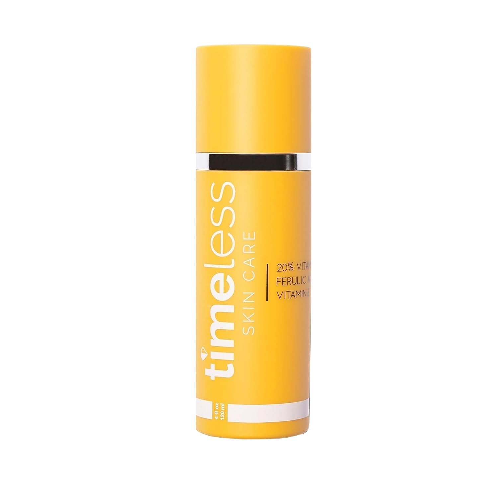
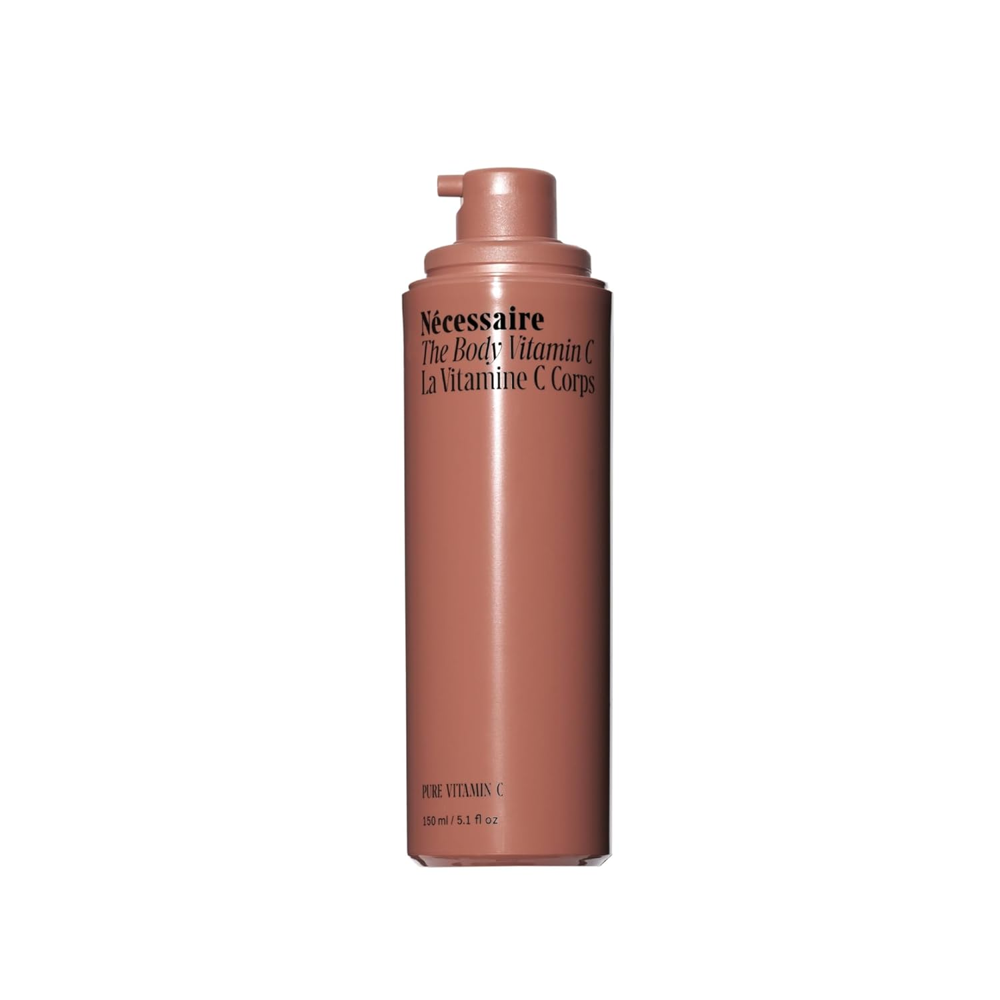
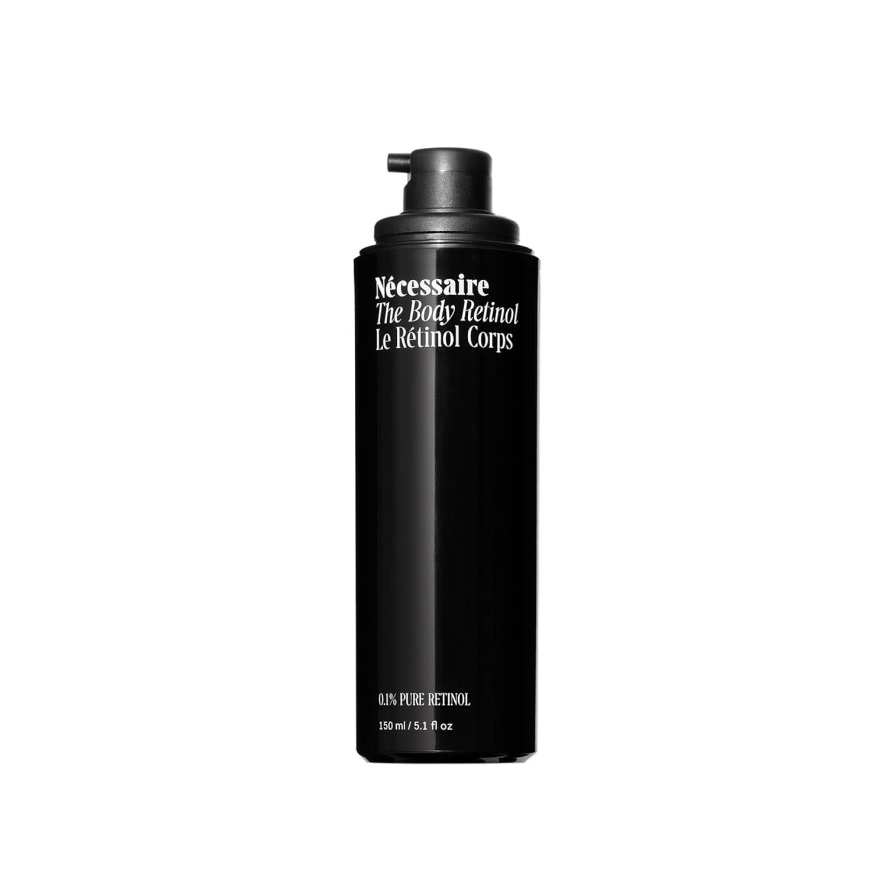

I noticed it in the mirror one morning — not my face, which I'd been carefully tending for years, but my knees. That particular quality of skin that no longer quite fits the body underneath it. Soft and slightly puckered, the texture had shifted in a way that felt both new and somehow irreversible. Then my chest: fine horizontal lines I couldn't blame on dehydration. Then my legs — that subtle but unmistakable loss of firmness that shows up somewhere around the mid-40s and doesn't respond to anything at the gym.
The frustrating part wasn't that my skin was changing. I knew it would. The frustrating part was that I had no routine for any of it. My face had a seven-step PM protocol. The rest of me had body lotion, applied inconsistently, and SPF when I remembered.
After spending the better part of two years trying body vitamin C, retinol, and exfoliation products — a lot of products — I've landed on a routine that actually moves the needle. These are the ones I kept.
"After trying a lot of body vitamin C and retinol on the market, I've landed on what actually works. These are the ones I kept."
Why Body Skin Ages
Related: perimenopause skincare guide →
— And Why We Ignore ItBody skin and facial skin share the same fundamental biology, but there are meaningful differences in how they age. The skin on your body is generally thicker and more protected from daily UV exposure — which is why it often ages more slowly than your face. But that slower timeline can work against you: by the time body skin shows visible aging, the changes tend to be more pronounced and harder to reverse.
The mechanism is the same as your face: declining collagen and elastin production, slower cell turnover, reduced ceramide levels in the skin barrier, and — for women in perimenopause and beyond — a significant drop in estrogen, which directly affects skin thickness, moisture retention, and structural integrity. Estrogen receptors are present throughout the body's skin. When estrogen declines, the effects show up everywhere — not just your face.
The areas that show it first are the ones with thinner skin, more UV exposure, or structural movement: the chest and décolletage, the knees and inner arms, the legs, and the hands. These are the zones that deserve the most attention.
- Crepiness on knees and inner arms — Loss of elastin means skin no longer snaps back. The thin, tissue-paper texture is driven by collagen and elastin decline.
- Laxity on legs and thighs — Reduced collagen and estrogen-driven structural changes allow skin to loosen in ways that feel disconnected from weight or fitness level.
- Chest lines — Repeated compression from sleep position combined with thinning skin and cumulative UV damage creates horizontal lines across the décolletage.
- Rough texture on arms and legs — Slower cell turnover means dead skin accumulates longer, dulling texture and blocking the absorption of actives.
Step One: Exfoliation in the Shower
The foundation of an effective body anti-aging routine is real exfoliation — not a loofah, not a scrub, but chemical exfoliation that actually accelerates cell turnover. Once a week I use the Glytone Exfoliating Body Wash in the shower. Glytone is a glycolic acid-based line developed by dermatologists, and the body wash delivers genuine chemical exfoliation. Glycolic acid is the smallest AHA molecule, which means it penetrates effectively and drives cellular renewal in a way that mechanical exfoliants can't match.
The difference within a few weeks was significant — skin texture on my arms and legs became noticeably smoother, and the crepiness on my knees responded better to everything else I applied afterward. Exfoliated skin absorbs actives more effectively, so this step makes everything that follows work harder.
Immediately after showering — while skin is still slightly damp — I follow with the Glytone Exfoliating Body Lotion. This leave-on formula continues the glycolic acid work between weekly wash sessions, keeping cell turnover elevated consistently. The wash and lotion together are one of the most effective combinations I've found in this category.

Glycolic acid body wash developed by dermatologists. Use once a week in the shower for genuine chemical exfoliation that smooths texture, accelerates cell turnover, and primes skin for actives. One of the most effective things I've added to my body routine.
Shop on Dermstore ↗
Apply immediately to damp skin after showering. This leave-on glycolic acid lotion maintains cell turnover between weekly wash sessions. Together with the body wash, it's the exfoliation foundation the rest of my routine is built on.
Shop on Dermstore ↗Rotating In: Multi-Acid Treatment
On evenings when I'm not using retinol, I rotate in the Prequel Multi Acid Milk one to two times per week after showering. Where Glytone focuses on glycolic acid, Prequel's formula combines multiple AHAs and BHAs for a broader exfoliation effect — addressing texture, tone, and clarity simultaneously. It's lighter in texture than a traditional lotion, which makes it easy to apply across larger body areas.
I don't use Prequel and retinol on the same night. Rotating them keeps the skin barrier intact while maintaining consistent active use throughout the week.

A lightweight multi-acid treatment combining AHAs and BHAs for texture, tone, and clarity. Apply after showering on nights alternating with retinol. Effective across larger body areas and easy to layer under moisturizer.
Shop on Amazon ↗Vitamin C: Morning Brightening
Related: vitamin C serum guide →
and ProtectionVitamin C is the cornerstone of my morning body routine — particularly for the chest, décolletage, and backs of hands, where years of UV exposure drive both pigmentation and collagen loss. It neutralizes free radical damage from UV exposure and directly stimulates collagen synthesis, making it one of the few topical ingredients that both prevents further damage and actively improves existing concerns.
A non-negotiable note on SPF: vitamin C applied in the morning must be followed by broad-spectrum SPF on all exposed areas before you go outside. Vitamin C is not a sunscreen — it's an antioxidant that works synergistically with UV protection. Without SPF, you're leaving the most important half of the equation out. For the chest, hands, and forearms especially, daily SPF is the single highest-impact anti-aging habit you can build. Reapply after handwashing. This is not optional.
I use two vitamin C products depending on the area. For the décolletage and chest — where I want clinical-strength collagen support — I apply the Timeless 20% Vitamin C + E Ferulic Acid Serum directly. It's the same gold-standard formulation that's a staple in facial routines (L-ascorbic acid stabilized with vitamin E and ferulic acid), at a fraction of the price of comparable serums, and the 4 fl oz size makes it practical for body use.
For broader coverage on arms and legs, I use Nécessaire The Body Vitamin C. Formulated specifically for body application — lighter in texture, easy to distribute, designed for daily use — it absorbs without residue and makes consistent application across larger areas actually realistic.

Clinical-strength 20% L-ascorbic acid stabilized with vitamin E and ferulic acid — the gold standard vitamin C formulation at an accessible price. The 4 oz size makes it practical for targeted body use on chest and décolletage. Always follow with SPF.
Shop on Amazon ↗
Pure vitamin C in a lightweight body lotion base designed for daily use over larger surface areas. Easy to absorb, no residue. I use this on arms and legs after the Timeless serum on the chest — together they cover everything. Follow with SPF on all exposed skin.
Shop on Amazon ↗Retinol: The Evening Foundation
Related: how retinol works on the face →
Retinol is the most well-researched anti-aging topical available without a prescription. On the body, where cell turnover is already slower than on the face, retinol's effects on smoothing, firming, and improving texture can be particularly significant. I've tried a number of body retinol formulas and have settled on two that I rotate depending on the area and what my skin needs that week.
I apply retinol two to three evenings per week — never on the same night as the Prequel multi-acid treatment — focusing on knees, inner arms, thighs, chest, and backs of hands. After application I layer a rich moisturizer over top to support the skin barrier. If you're new to body retinol, start two nights per week and build from there.

0.1% pure retinol in a firming serum-lotion hybrid. One of the best-formulated body retinols I've tried — effective concentration, elegant texture, absorbs without greasiness. Noticeably improves skin firmness and texture with consistent use over months.
Shop on Amazon ↗
0.1% retinol in a richer lotion base with shea butter and antioxidants. I rotate this with the Nécessaire — it's more moisturizing, which makes it ideal for drier areas or drier seasons. Strong clinical formulation with a well-established track record.
Shop on Amazon ↗The Full Routine at a Glance
- Once a week, in the shower: Glytone Exfoliating Body Wash in place of regular body wash.
- After that shower (and most showers): Glytone Exfoliating Body Lotion applied immediately to damp skin.
- Every morning: Timeless 20% Vitamin C serum on chest and décolletage. Nécessaire Body Vitamin C on arms and legs. SPF on all exposed areas before going outside — non-negotiable.
- 2–3 evenings per week: Body retinol (Nécessaire or Paula's Choice) on knees, inner arms, thighs, chest, and backs of hands. Follow with a rich moisturizer.
- 1–2 evenings per week, alternating with retinol: Prequel Multi Acid Milk after showering. Do not use on the same night as retinol.
- Daily: Rich moisturizer on full body. Hydrated skin shows less crepiness and absorbs actives more effectively.
What to Expect
Related: at-home devices →
Body skin responds to the same inputs as facial skin — it just takes longer. Expect to assess results at the three-month mark rather than three weeks. Texture and tone respond first. Firmness and crepiness take longer and improve more gradually. Manage expectations honestly: topicals can meaningfully slow further change and improve what's there, but significant laxity or deep crepiness responds more to in-office treatments (radiofrequency, laser) than to anything applied topically.
Start with one zone and one or two products. The Glytone wash and lotion are a strong starting point — exfoliation is the step most people skip entirely, and it's the one that makes everything else work better. Build from there. Consistency over months will always outperform the most sophisticated routine done sporadically.